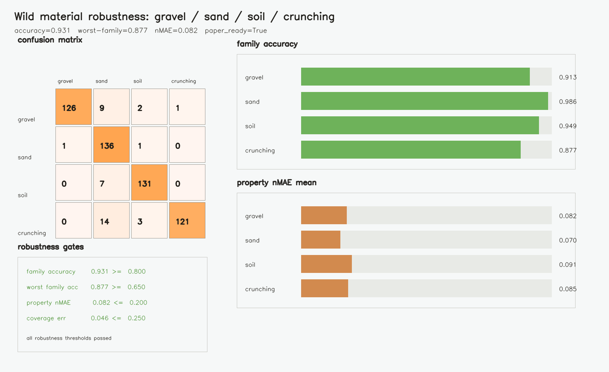
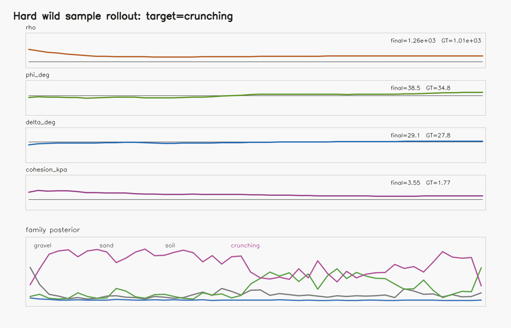
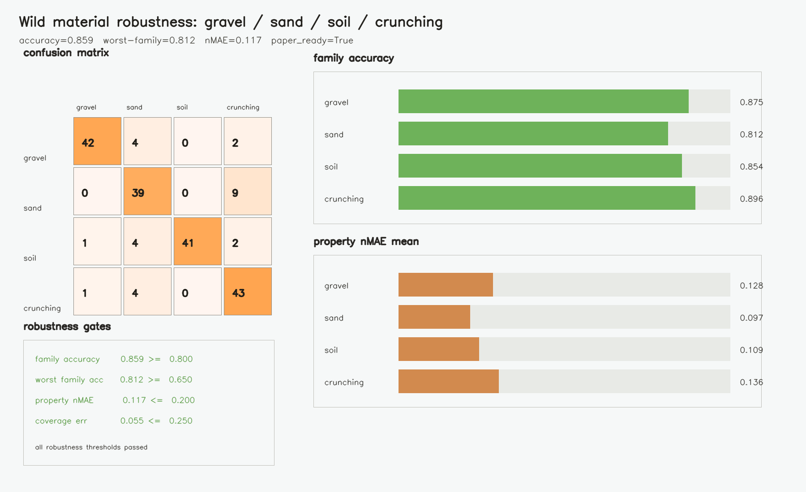

Scope: this project currently claims Sim2Sim robustness only. It is designed so the same property posterior, probes, render contract, and policy heuristics can be swapped into Real2Sim later without changing the evaluation story.
Method
The core idea is to keep the granular medium inspectable: first infer material belief from the contact-rich rollout, then evaluate whether that belief changes a downstream excavation action in the simulator.
Generate paired materials
Sample sand, soil, gravel, and crunching debris with overlapping property ranges and nuisance actions.
Estimate online belief
Fuse MPM visual deformation summaries with wrench and end-effector kinematics frame by frame.
Validate Sim2Sim
Run GT and estimated materials through the same property-revealing bulldozing wedge task.
Close the loop
Use the posterior to select a shallower excavation plan when the material looks risky.
Stress Benchmark
The headline run uses held-out actions, held-out materials, overlapping property ranges, sensor noise, and vision corruptions.


Policy And Sim2Sim Videos
The main video is pinned at the top of the page. These supporting videos show property posterior overlays, GT versus estimated material behavior, and the fixed interaction-region render.

Reviewer Audit
The audit is intentionally adversarial: if a simpler path can explain the score, it should show up here before the claim becomes too polished.
| Variant | Family Acc | Worst | Gate | Interpretation |
|---|---|---|---|---|
| main | 0.859 | 0.812 | pass | Quick stress run remains above the gate. |
| no property-family head | 0.849 | 0.812 | pass | Joint head helps, but is not the only signal source. |
| sensor only | 0.740 | 0.479 | fail | Force and kinematics alone are not enough in this setup. |
| vision only | 0.802 | 0.729 | pass | Deformation summaries carry strong material information. |
| context only | 0.250 | 0.021 | fail | Chance-level result weakens the label leakage concern. |
| no sigma calibration | 0.859 | 0.792 | pass | Calibration mostly affects uncertainty quality. |
Reproducibility
The repo keeps generated outputs out of source control. Figures and videos on this page are either committed page assets or regenerated from versioned configs.
Fresh clone
git clone https://github.com/rachy103/Granular_Sim2Sim.git
cd Granular_Sim2Sim
./install.sh --locked
make smokeHeadline artifacts
make render-density-eef
make sim2sim-wedge
make excavation-policy
make wild-robustness-stress
make wild-review-auditCitation
@misc{granularsim2sim2026,
title = {Granular Sim2Sim: Online Material Belief for Robot Excavation},
author = {Rachy103 and contributors},
year = {2026},
url = {https://github.com/rachy103/Granular_Sim2Sim}
}